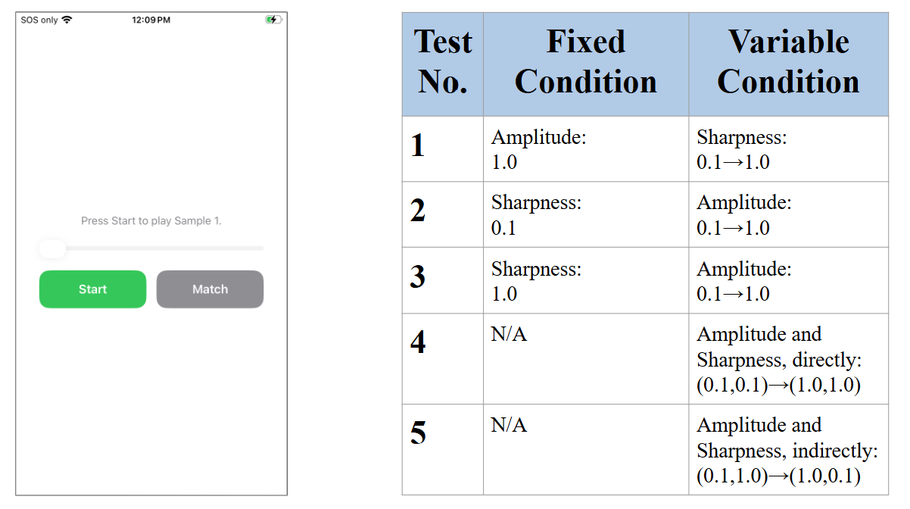

SMARTPHONE HAPTIC PERCEPTION
Haptic Parameter Matching
A psychophysical experiment investigating how accurately participants can reproduce characteristics of a tactile stimulus.
Participants receive controlled haptic stimuli through a smartphone and adjust a slider to produce a perceived match.
Experiment Development · Human Subject Testing
Haptic Perception · Psychophysics · Parameter Matching
Swift · SwiftUI · Core Haptics · R
